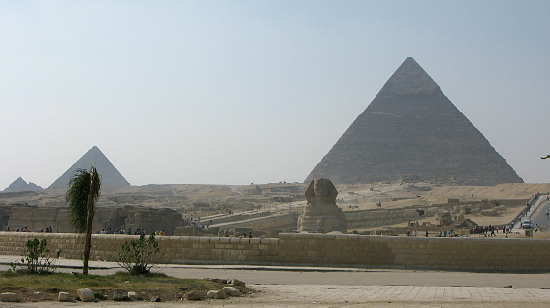
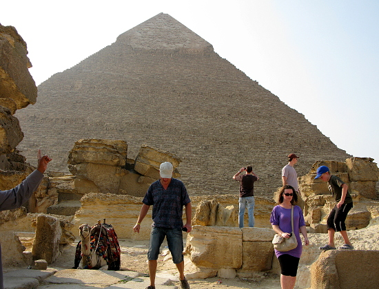
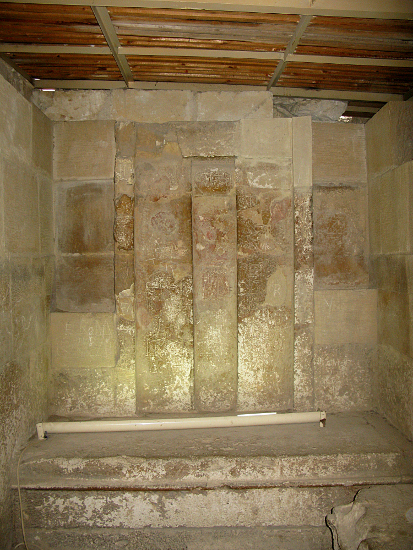
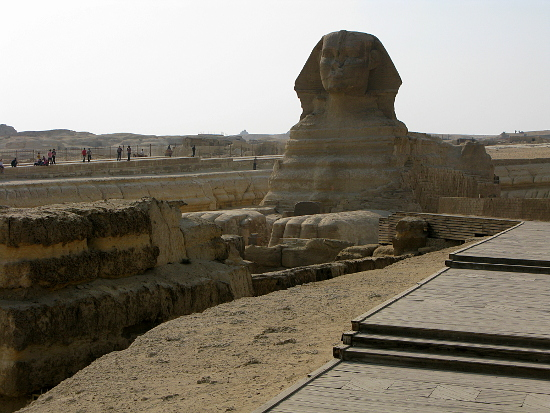
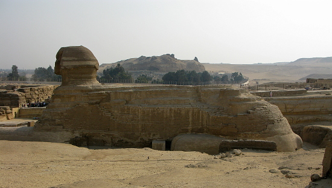
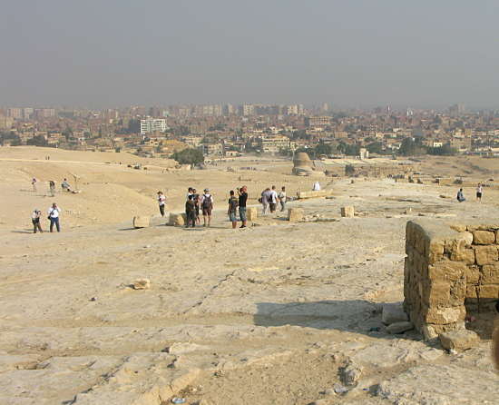
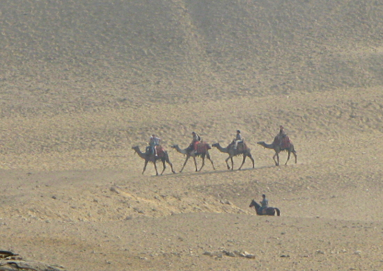

Egypt Trav-E-Log ©
Giza
7 Nov 2010, Giza, Egypt
-------------------------------------------
My knowledge of Egypt was weak, so read a lot before making several decisions. How close are places to Cairo? The Pyramids? The Nile? The Suez? Luxor? Aswan? I didn't have a clue, so will talk through some of the geography on this web site. The first thing to learn is that the cities of Giza and Cairo have grown into one another, as they were only 12 miles apart. Giza is now one of the five divisions of the Greater Cairo metropolis. The downtown area can be seen from the Giza Plateau, the location of the Pyramids and the Great Sphinx. An Egyptian TimeLine will be presented later on this website.
-------------------------------------------
 |
Above and to the left is the view you see when you get out of your bus or taxi. It is just amazing these monuments are over 4500 years old. |
| Tourists and touts have the freedom to scramble over much of the area. Before the importance of the structures was known, many of the smoothly crafted fascia blocks of granite and alabaster were hauled off for local construction projects. |
 |
 |
Some of the pyramids were open for inspection. Many have been looted over the past 4500 years, but a few have had contents placed in museums for public inspection. More on this later. |
| The deep, large pit around the Sphinx may have been a moat in ancient times. Access is now controlled, which minimizes further damage by keeping the curious from climbing all over this monument. The Sphinx Temple is located immediately in front of the Sphinx, but there is no passageway from one to the other. |
 |
 |
The side view of the Sphinx gives some idea of how worn this sandstone structure is. Preservation efforts on these important monuments were obvious during the visit. |
| View of Giza city from the plateau. Note the back of the Sphinx near the center of the photo. Also note the hard-pack sandy soil in this area where rain is rare. |
 |
 |
Could not resist taking a photo of this camel train in the distance. Actually, from a distance is the best vantage point from which to appreciate camels! |
Question? Contact me at the Juno.com address Dancer2SEAsia.
Life is Good When You Travel! Turn off the TV and start planning your next trip!